3 < 5[1] TRUERecommended option: access it via the RStudio Server Online:
Alternative: install it locally on your PC following these instructions.
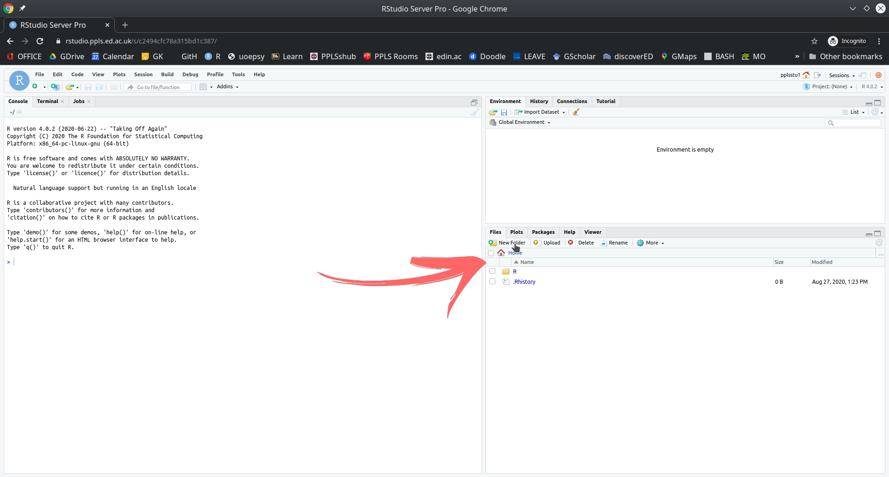
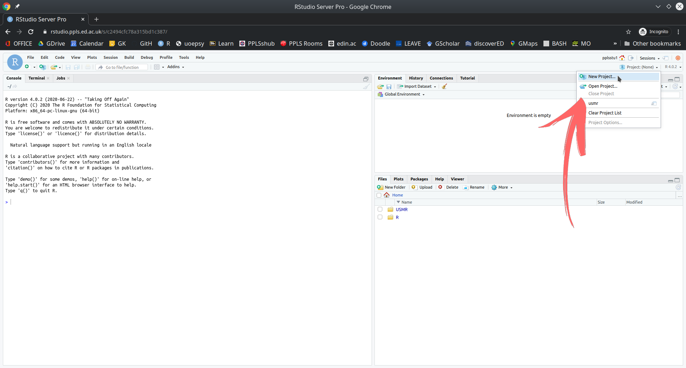
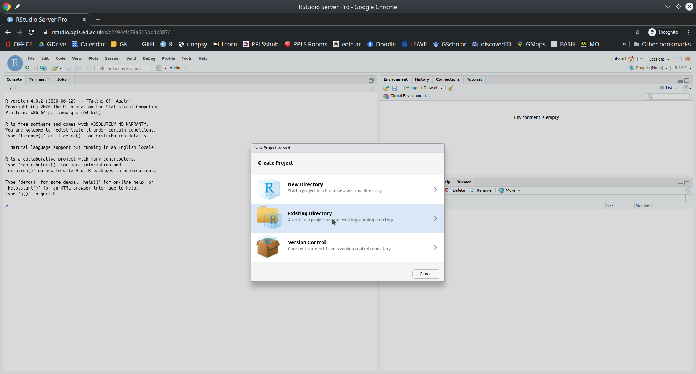
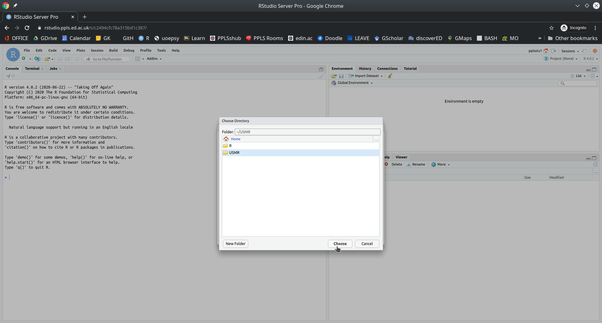
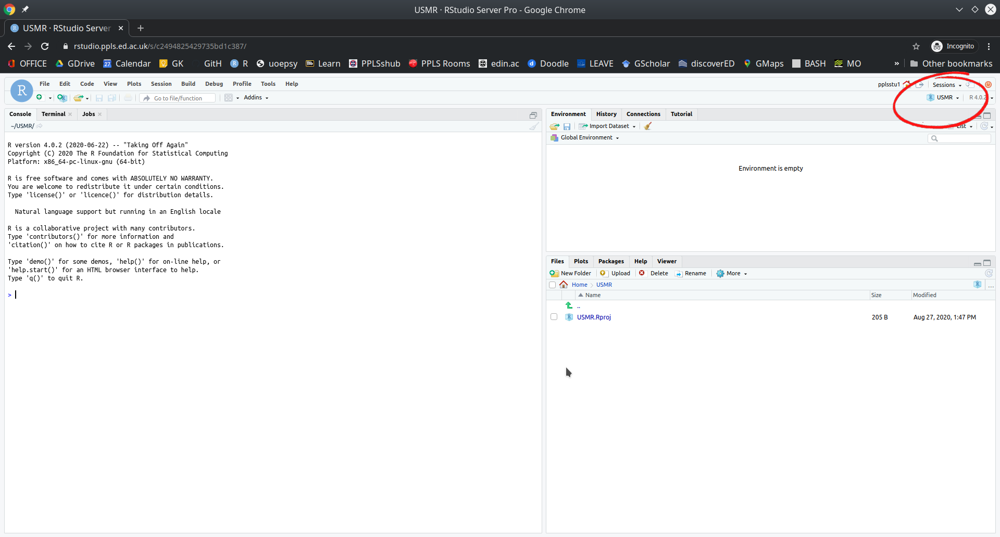
You’re ready to go!
Okay, now you should have RStudio and a project open, and you should see something which looks more or less like the image below, where there are several little windows.
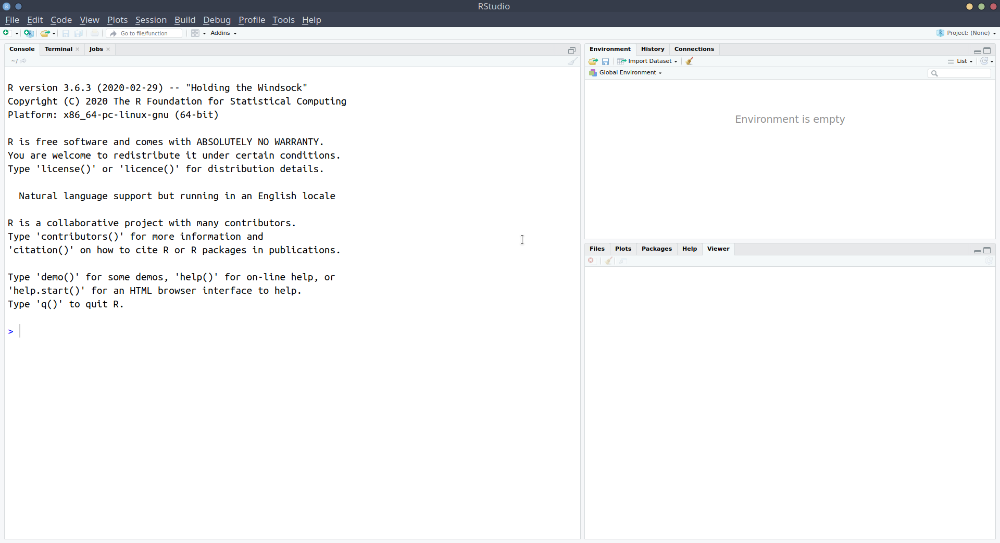
We are going to explore what each of these little windows offer by just diving in and starting to do things.
Starting in the left-hand window, you’ll notice the blue sign > which is where we R code gets executed.
Type 2+2, and hit Enter ↵. You should discover that R is a calculator.
Let’s work through some of the basic operations (adding, subtracting, etc). Try these commands yourself:
2 + 510 - 42 * 510 - (2 * 5)(10 - 2) * 510 / 23^2 (Hint, interpret the ^ symbol as “to the power of”)Whenever you see the blue sign >, it means R is ready and waiting for you to provide a command.
If you type 10 + and press Enter, you’ll see that instead of a blue > you are left with a blue +. This means that R is waiting for more. Either give it more, or cancel the command by pressing the escape key on your keyboard.
As well as performing calculations, we can ask R things, such as “Is 3 less than 5?”:
3 < 5[1] TRUEAs the computation above returns TRUE, we notice that such questions return either TRUE or FALSE. These are not numbers and are called logical values.
Try the following:
3 > 5 “is 3 greater than 5?”3 <= 5 “is 3 less than or equal to 5?”3 >= 3 “is 3 greater than or equal to 3?”3 == 5 “is 3 equal to 5?”(2 * 5) == 10 “is 2 times 5 equal to 10?”(2 * 5) != 11 “is 2 times 5 NOT equal to 11?”We can also store things in R’s memory, and to do that we just need to give them a name. Type x <- 5 and press Enter.
What has happened? We’ve just stored something named x which has the value 5. We can now refer to the name and it will give us the value! Try typing x and hitting Enter. It should give you the number 5. What about x * 3?
The <- symbol, pronounced arrow, is used to assign a value to a named object:
[name] <- [value]
Note, there are a few rules about names in R:
<- don’t matter):
lucky_number <- 5 ✔ lucky number <- 5 ❌lucky_number <- 5 ✔ 1lucky_number <- 5 ❌lucky_number is different from Lucky_NumberYou might have noticed that something else happened when you executed the code x <- 5. The thing we named x with a value of 5 suddenly appeared in the top-right window. This is known as the environment, and it shows everything that we store things in R:
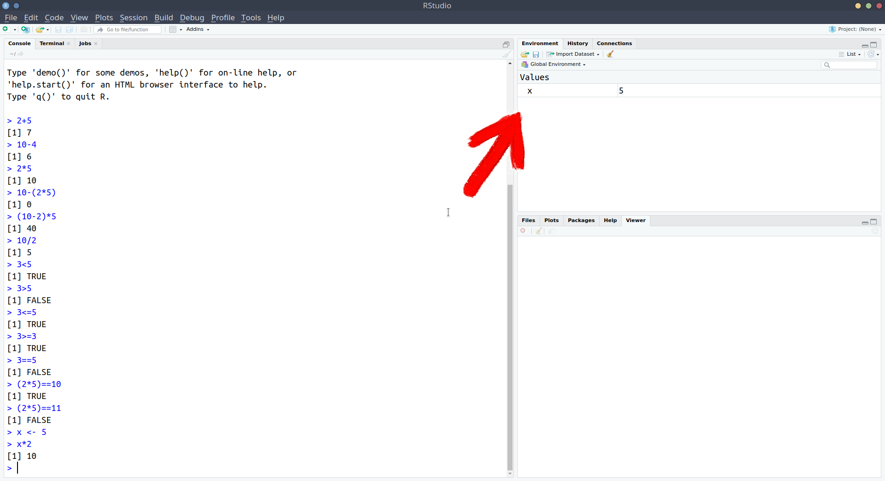
We’ve now used a couple of the windows - we’ve been executing R code in the console, and learned about how we can store things in R’s memory (the environment) by assigning a name to them:
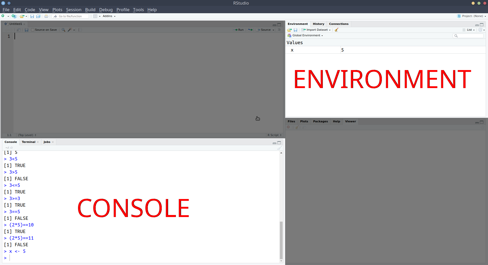
Notice that in the screenshot above, we have moved the console down to the bottom-left, and introduced a new window above it. This is the one that we’re going to talk about next.
What if we want to edit our code? Whatever we write in the console just disappears upwards. What if we want to change things we did earlier on?
Well, we can write and edit our code in a separate place before sending it to the console to be executed. That place is an R script.
x <- 210
y <- 15
x / yNotice what has happened - it has sent the command x <- 210 to the console, where it has been executed, and x is now in your environment. Additionally, it has moved the text-cursor to the next line.
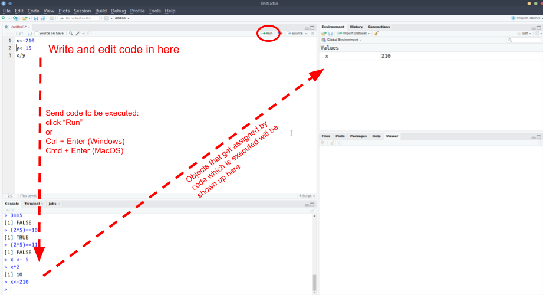
Press Ctrl + Enter (Windows) or Cmd + Enter (macOS) again. Do it twice (this will run the next two lines).
Then, change x to some other number in your R script, and run the lines again (starting at the top).
Add the following line to your R script and execute it (send it to the console pressing Ctrl/Cmd + Enter):
plot(1,5)A very basic plot should have appeared in the bottom-right of RStudio. The bottom-right window actually does some other useful things.
NOTE: When you save R script files, they terminate with a .R extension.
Comments in code
Note that using # in R code makes that line a comment, which basically means that R will ignore the line. Comments are useful for you to remind yourself of what your code is doing.
Okay, so we’ve now seen all of the different windows in RStudio in action:
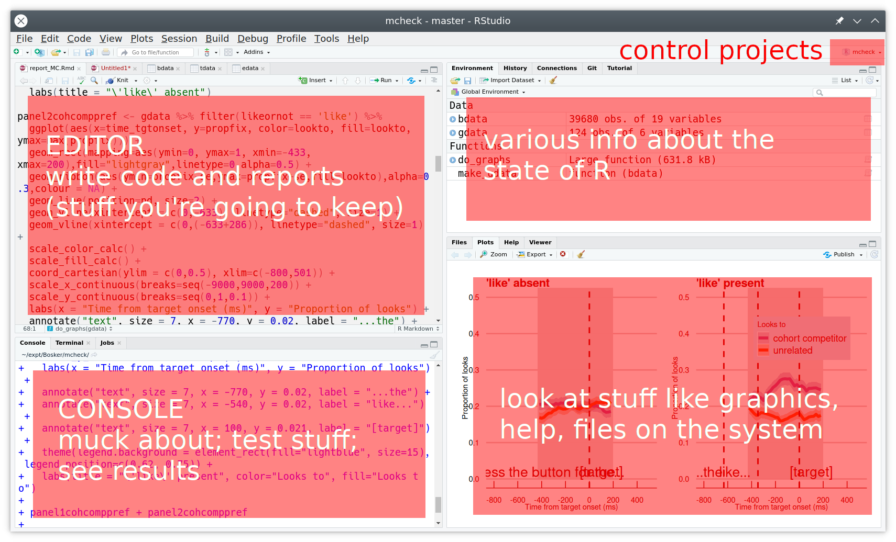
Below are a couple of our recommended settings for you to change as you begin your journey in R.
Useful Settings 1: Clean environments
As you use R more, you will store lots of things with different names. Throughout this course alone, you’ll probably name hundreds of different things. This could quickly get messy within our project.
We can make it so that we have a clean environment each time you open RStudio. This will be really handy.
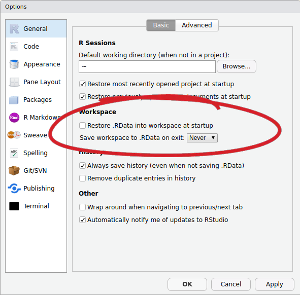
Useful Settings 2: Wrapping code
In the editor, you might end up with a line of code which is really long, but you can make RStudio ‘wrap’ the line, so that you can see it all, without having to scroll:
x <- 1+2+3+6+3+45+8467+356+8565+34+34+657+6756+456+456+54+3+78+3+3476+8+4+67+456+567+3+34575+45+2+6+9+5+6| Symbol | Description | Example |
|---|---|---|
+ |
adds two numbers together | 2+2, two plus two |
- |
subtract one number from another | 3-1, three minus one |
* |
multiply two numbers together | 3*3, three times three |
/ |
divide one number by another | 9/3, nine divided by three |
() |
group operations together | (2+2)/4 is different from 2+2/4 |
^ |
to the power of.. | 4^2 - four to the power of two, or four squared |
<- |
stores an object in R with the left hand side (LHS) as the name, and the RHS as the value | x <- 10 |
= |
stores an object in R with the left hand side (LHS) as the name, and the RHS as the value | x = 10 |
< |
is less than? | 2 < 3 |
> |
is greater than? | 2 > 3 |
<= |
is less than or equal to? | 2 <= 3 |
>= |
is greater than or equal to? | 2 >= 2 |
== |
is equal to? | (5+5) == 10 |
!= |
is not equal to? | (2+3) != 4 |
c() |
combines values into a vector (a sequence of values) | c(1,2,3,4) |